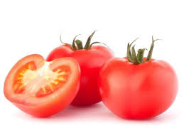

Whats up Doc?OMG An Onion!Sponcored by Popeyes.

Tomatoes/Tomatas
benefits
Carrots
Carrots are a rich source of this powerful antioxidant, which, among other vital uses, can be converted into vitamin A in the body to help maintain healthy skin.
Digestion: Carrots increase saliva and supply essential minerals, vitamins and enzymes that aid in digestion.
Onions
These antioxidants provide this vegetable with its sweet flavors and distinct aroma. Consuming onions supplies your body with soluble fiber and flavonoids, antioxidant compounds that fight free radicals. These flavonoids assist in thinning your blood, decreasing inflammation and fighting cancer.
Spinach
The possible health benefits of consuming spinach include improving blood glucose control in people with diabetes, lowering the risk of cancer, reducing blood pressure, improving bone health, lowering the risk of developing asthma, and more.
Spinach has been used by various cultures throughout history, notably Mediterranean, Middle-Eastern, and South East Asian cuisines. It can be incorporated quite easily into many diets because it is cheap and easy to prepare.
Tomatoes
Reduced risk of heart disease and cancer.
hey are a great source of vitamin C, potassium, folate and vitamin K.